後編のレポートになります！
後編では私が購入したグッズを紹介したいと思います。
なお、予算的な都合で全種類購入できていませんのでご承知おきください(T-T)
それではレポートスタートです！
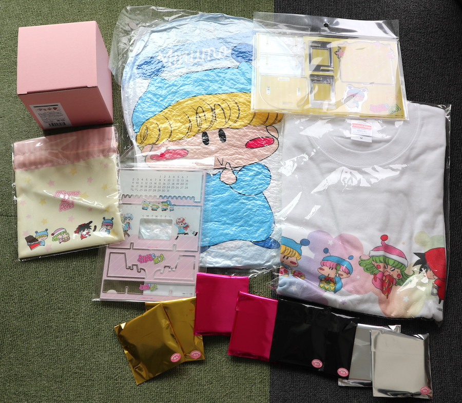
まずは今回購入したグッズたちの全景です。
一度にこんなにもたくさんのミルモグッズを購入できる日が来るなんて・・！
もっと買った人からすると「買ったのこれだけ！？」とか言われないかドキドキ・・
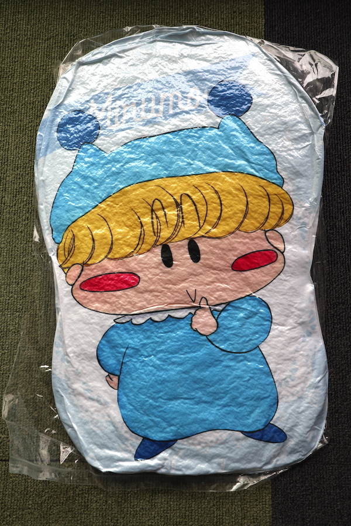
まずは今回一番目立つグッズ、ダイカットクッション。
空気を入れると膨らんでクッションになるようです。
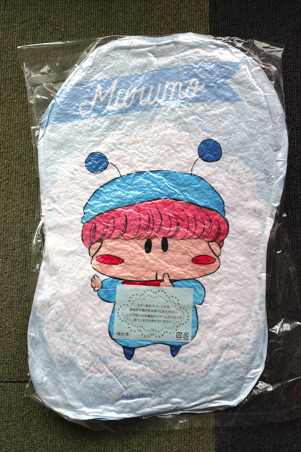
裏面には我らがムルモさんが描かれています。
ボクに商品の説明書きを重ねないでくだしゃい！💢というムルモの声が聞こえてきそう！？
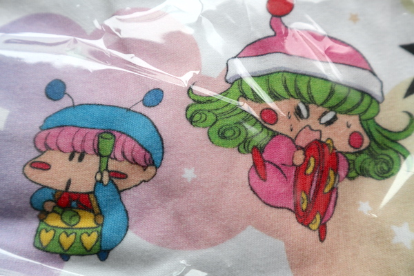
Tシャツの柄をアップで撮影。
安っぽいアイロンプリントではなく、しっかりとTシャツに印刷されているのが良い感じです(^^)
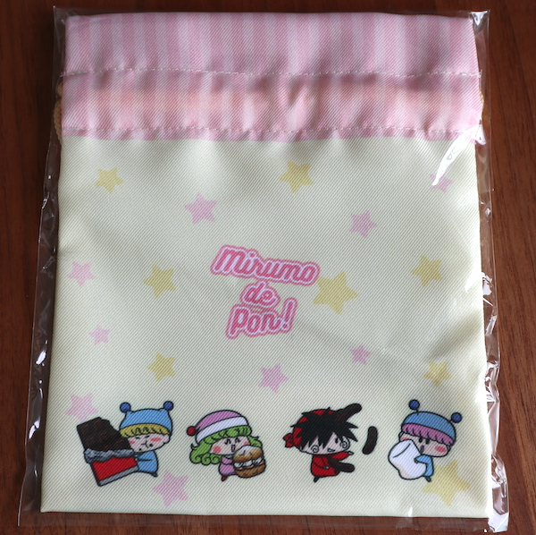
巾着です。この巾着だけ製造の都合で発売が遅れましたが、無事に発売してくれました。
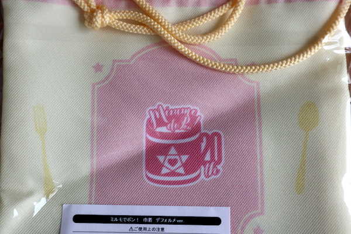
巾着の裏側には今回の20周年ロゴが！
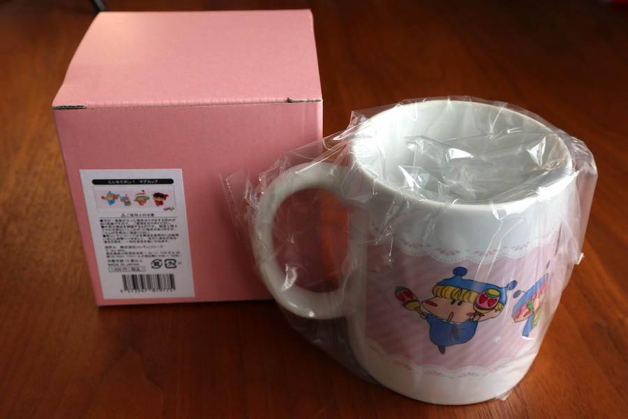
マグカップです。もったいなくて使えない！？
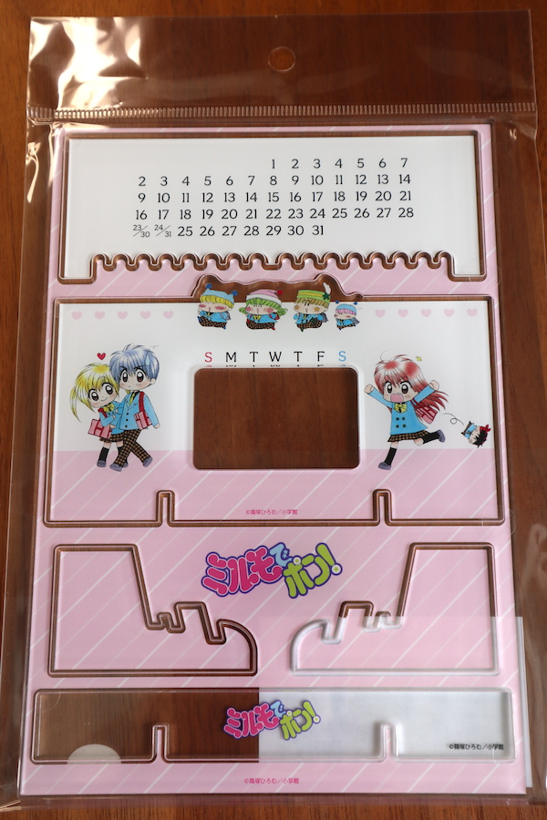
アクリル万年カレンダー。何年何月によらず使える万能カレンダーです。
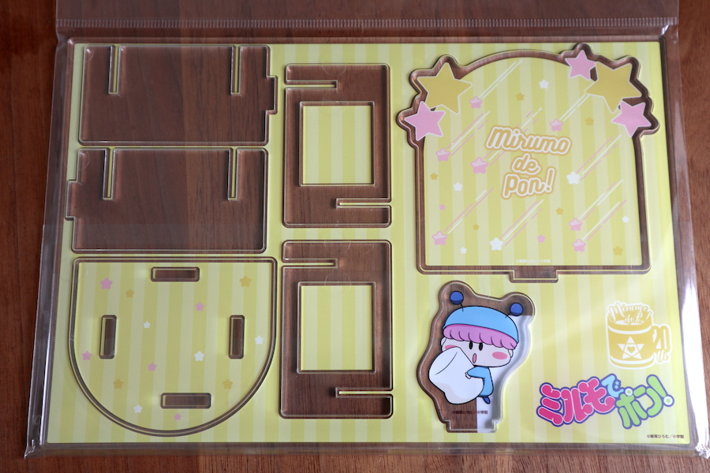
アクリルペンスタンド。
主役４妖精の４種類ありますが、私はムルモのみ購入しました。
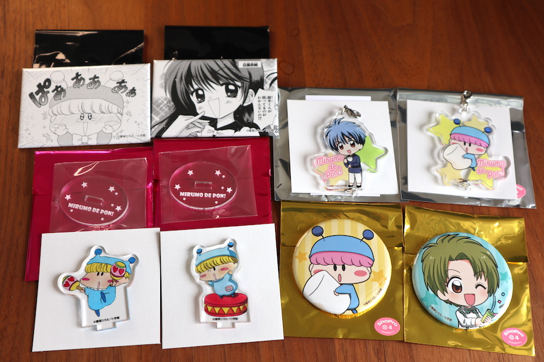
ドキドキのブラインド商品群です。
左上：スクエアカンバッジ（ブラインド）９種、左下：ミニアクリルスタンド（ブラインド）８種、右上：つながるアクリルキーホルダー（ブラインド）８種、右下：カンバッジ（ブラインド） デフォルメver. ８種。
カンバッジ９種以外のブラインド商品を２個ずつ購入しました。気のせいかムルモ率が高い気がします^^
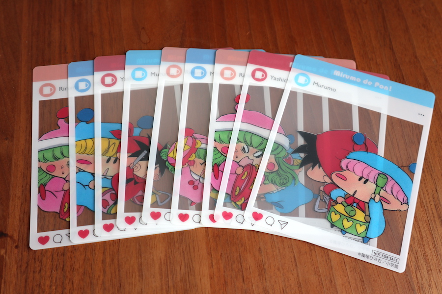
2,000円購入ごとに１枚もらえる特典（SNS風クリアカード）です。
全部で９枚あるということは・・。
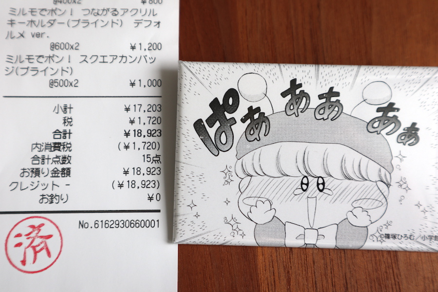
はい、総額１万８千円のお買い上げです。ぱあぁぁぁぁ😅
今回購入できませんでしたが、他にもまだまだグッズがあります。
- カンバッジ（ブラインド）９種
- ミニタオル
- アクリルスタンド４種（人間４人）
- アクリルフィギュア２種（南楓、結木摂）
- クリアファイルセット
ミルモ公式からこのような豪華なグッズ展開があったのは本当にうれしかったです。ミルモファンを続けてきてよかった！
20周年Yearはまだまだ３ヶ月しか過ぎていないので、残り９ヶ月での新たなニュースにも期待したくなりますよね。新たなグッズ、ぬいぐるみ販売、再連載、再アニメ化、再ゲーム化など、いろんな大旋風を起こしてほしいところ・・。もちろん私もイラストなどを描きながら、20周年をもっと盛り上げていきますので、みなさんの方からも盛り上げていただけるとうれしいです^^
最後にですが、公式の通販サイトから画像引用という形で今回のミルモグッズを取りまとめ、レポートを終わります。
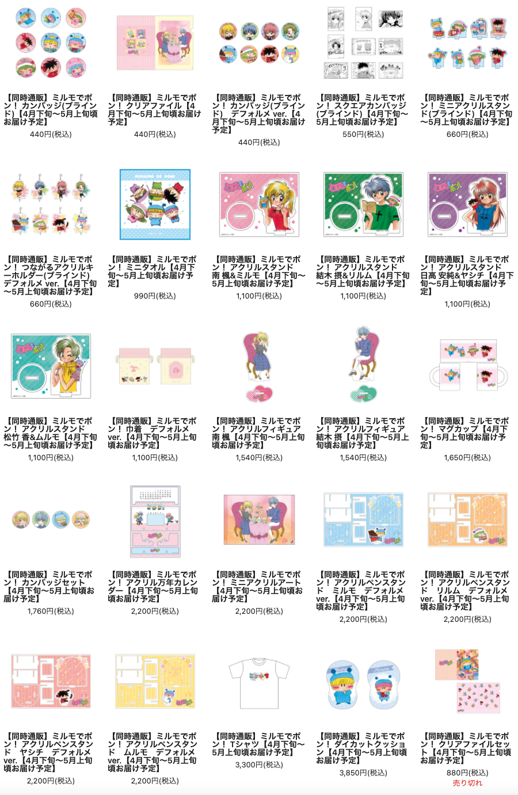
(2021/4/5)